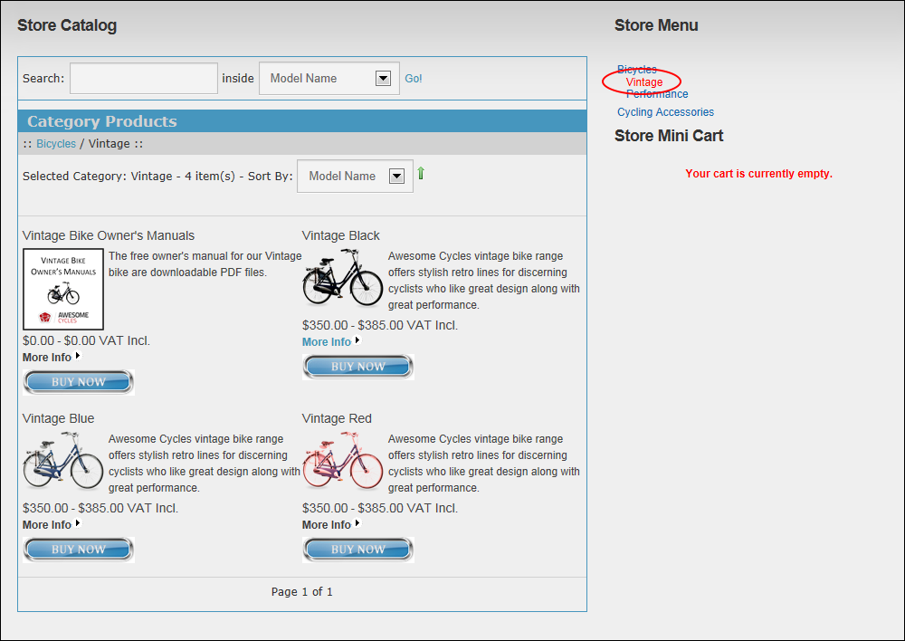
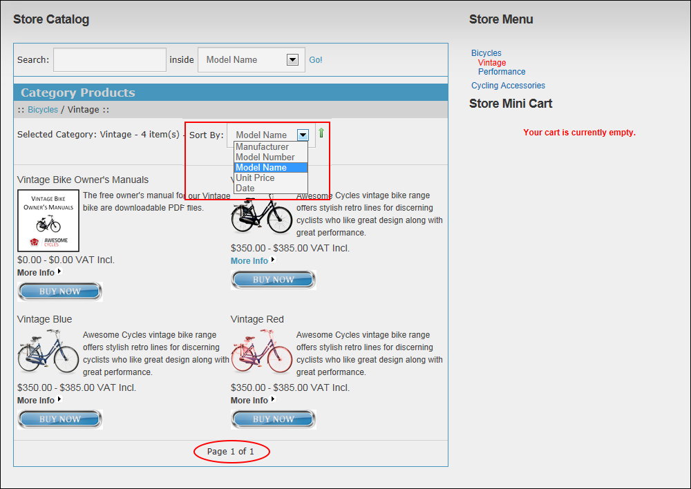

Viewing Products
How to navigate to and view products associated with a category in the Store module.
- In the Store Menu, select a Category. This display the products within this category in the Store Catalog. If the selected category is a parent category, products within all related child categories are also displayed.
- Optional. If available, click on a Child Category in either the Store Menu or using the category breadcrumbs displayed above the products in the Store Catalog to only view products for that child category.

- Optional. To view products not displayed on the first page of the category, click on the [Page Number] link located at the base of the module.
- Optional. At Sort By, select to sort products by Manufacturer, Model Number, Model Name, Unit Price, or Date. You can also click the related icon to view product in either Ascending or Descending order.
